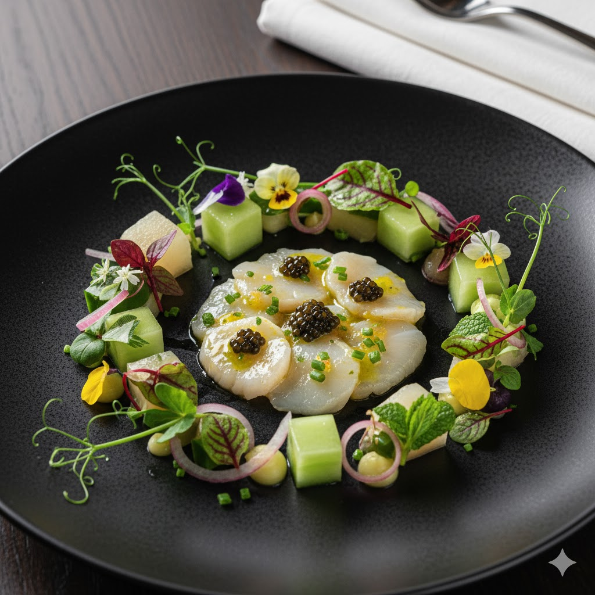

Appetizer1
นี้คือการนำเสนอหอยเชลล์ฮอกไกโดซอสเซวิเช่มะนาวคาเวียร์อย่างสดชื่น เสิร์ฟพร้อมเจลลี่แตงกวากลิ่นมิ้นท์และผักไมโครกรีน ประดับด้วยดอกไม้กินได้ ให้รสชาติเปรี้ยวหวานสดชื่นตัดกับความเค็มเล็กน้อย เป็นการเปิดมื้ออาหารที่สง่างามและน่าประทับใจ